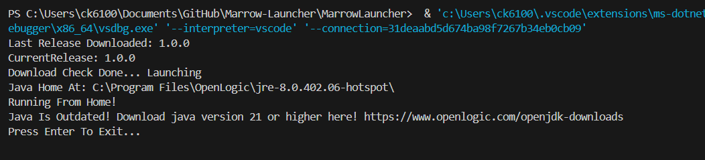

This Guide will help you set up marrow!
If marrow is already running fine on your pc, you don't need this :3
First, you must download the launcher. The launcher can be found here.
Once it is installed, unzip it and run Marrow Launcher.exe (or just Marrow_Launcher on Linux)
An error similar to this will likely show up
Follow the link given to you and download java 21 or higher.
Once installed, run the program. If any other errors occur follow the instructions given. If it still is not working join the Marrow Discord and ask one of the devs if they're online OR ask in the forums (wip)
If it all works correctly, running Marrow Launcher will open Marrow!
Now that you have Marrow up and running, refer to the other guides or the Discord for more information on the menus